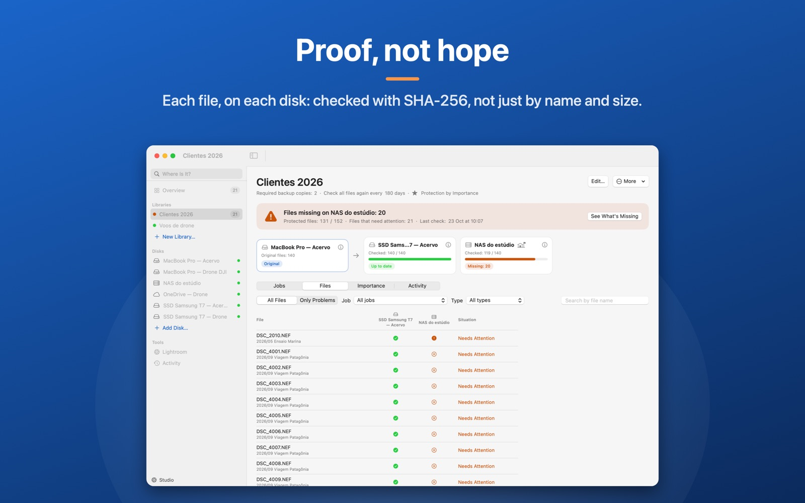
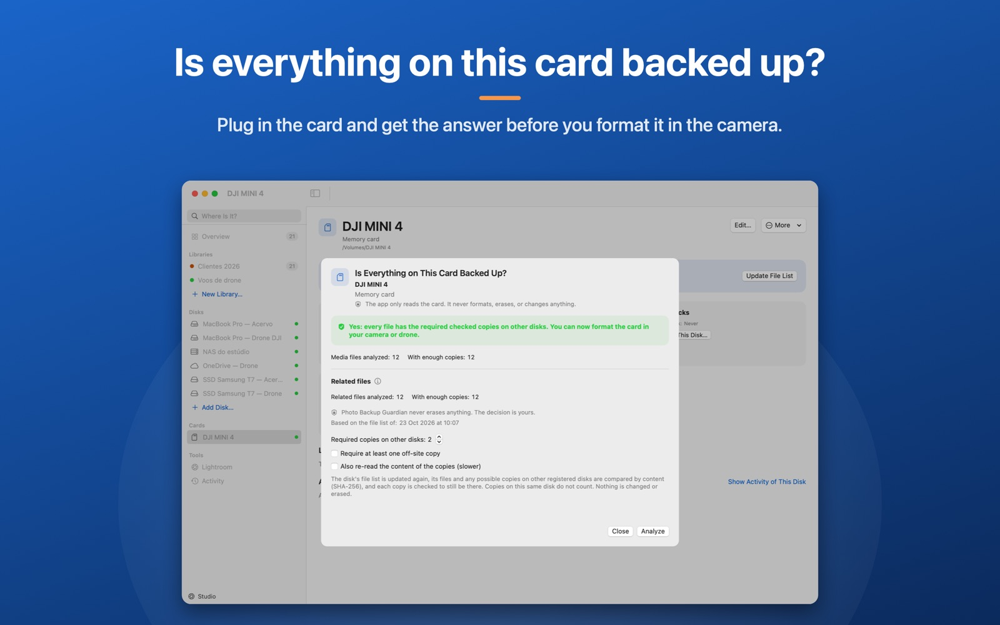
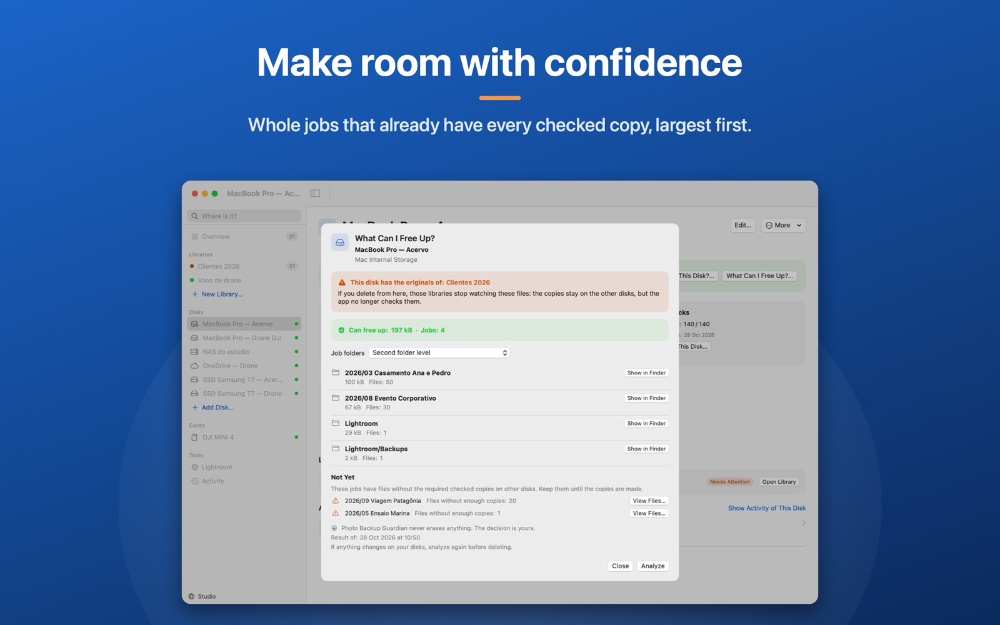
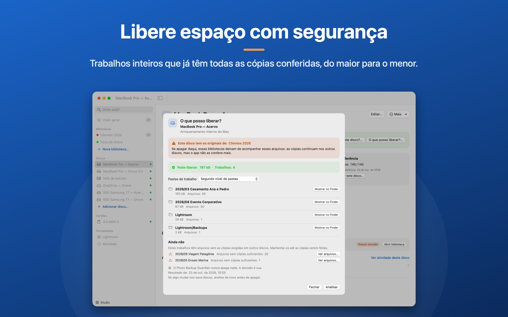
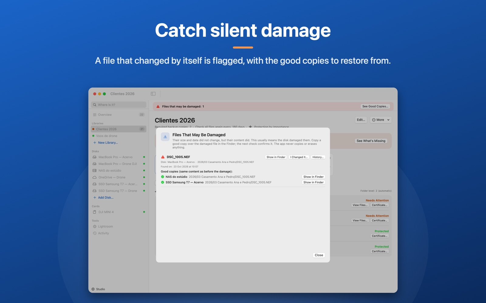
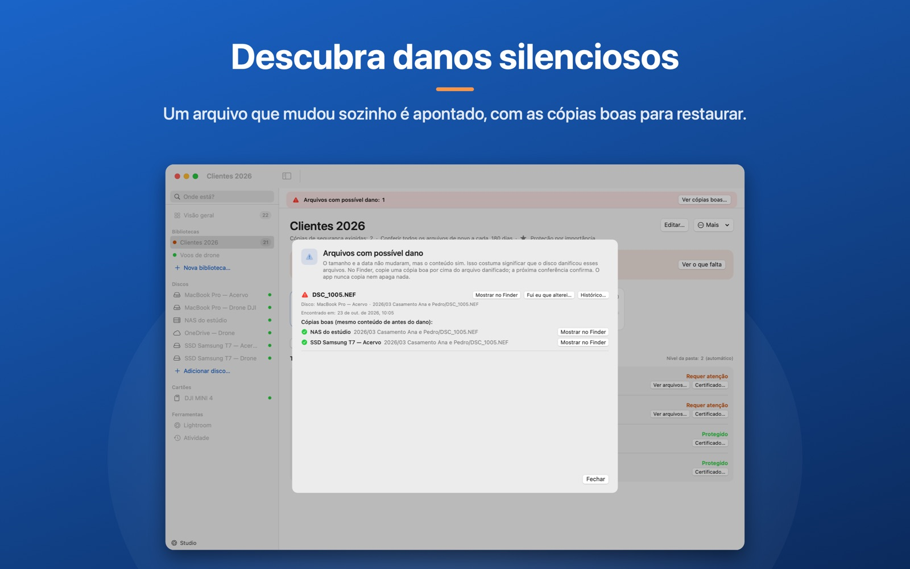
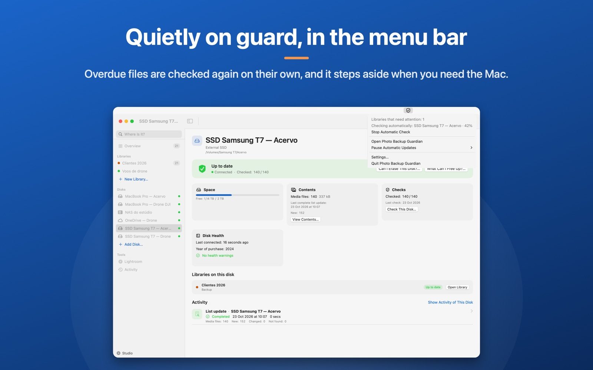
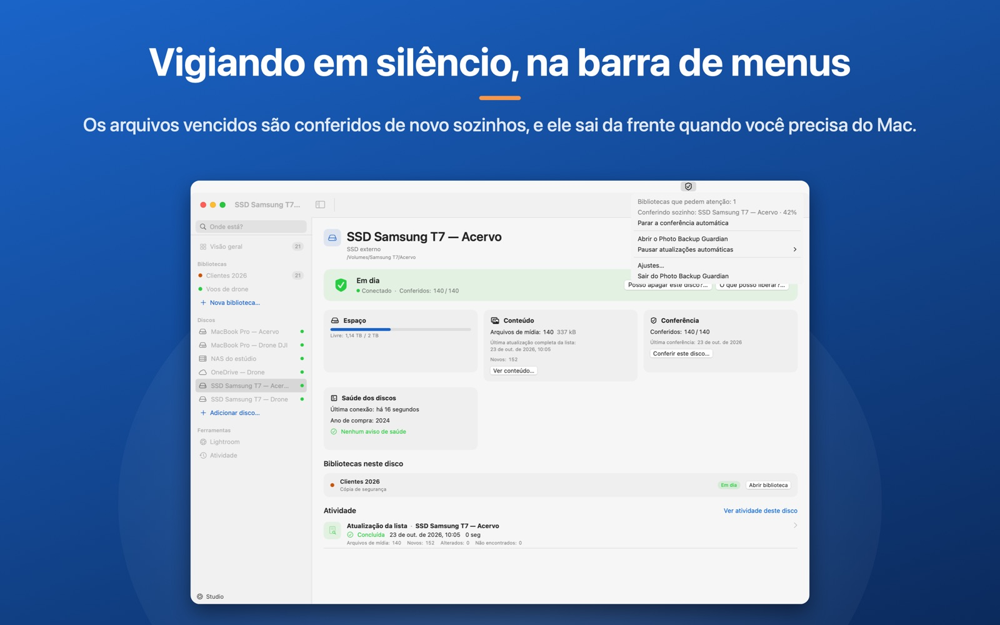

A backup nobody checked is just hope.
Backup que ninguém conferiu é só esperança.
After hundreds of imports, copies and drive swaps, three things usually slip by.
Depois de centenas de importações, cópias e trocas de disco, três coisas costumam passar despercebidas.
The copy that stopped halfway
A cópia que parou no meio
Name and size match, but the content was never compared. You find the broken file the day you need to open it.
O nome e o tamanho batem, mas o conteúdo nunca foi comparado. Você só descobre o arquivo quebrado na hora de abrir.
The cloud that’s still uploading
A nuvem que ainda está enviando
The folder looks synced, but part of the shoot never finished uploading. The off-site copy doesn’t really exist.
A pasta aparece sincronizada, mas parte do ensaio nunca terminou de subir. A cópia fora de casa não existe de verdade.
The drive forgotten in a drawer
O HD esquecido na gaveta
It hasn’t been plugged in for a year. Nobody knows what’s on it, or whether another disk already holds all of it.
Faz um ano que ele não é conectado. Ninguém sabe o que tem dentro, nem se outro disco já guarda tudo aquilo.
The 3-2-1 rule
A regra 3-2-1
Knowing the rule is easy. Knowing it holds today isn’t.
Conhecer a regra é fácil. Difícil é saber se ela vale hoje.
Guardian turns 3-2-1 into something you can see, file by file.
O Guardian transforma o 3-2-1 em algo que você enxerga, arquivo por arquivo.
copies of every file
cópias de cada arquivo
You set how many backups each library requires. The app compares the originals with each disk and lists what’s missing, and where.
Você define quantos backups cada biblioteca exige. O app compara os originais com cada disco e lista o que falta, e onde.
kinds of storage
tipos de armazenamento
SSD, hard drive, NAS, cloud folder: you register each place. Two folders on the same physical disk count as one copy.
SSD, HD, NAS, pasta de nuvem: cada lugar é cadastrado. Duas pastas no mesmo disco físico contam como uma cópia só.
copy off-site
cópia fora de casa
Mark which disks live away from the studio. A file without an off-site copy stays on your to-do list until it has one.
Marque quais discos ficam longe do estúdio. Arquivo sem cópia fora de casa aparece como pendência até você resolver.
How it works
Como funciona
Four steps to your first answer.
Quatro passos até a primeira resposta.
- 01
Register your places
Cadastre seus locais
Mac folders, external drives, NAS shares and cloud folders.
Pastas do Mac, discos externos, compartilhamentos de NAS e pastas de nuvem.
- 02
Create a library
Crie uma biblioteca
Say where the originals are, which places hold copies and how many you require.
Diga onde ficam os originais, quais locais guardam cópias e quantas você exige.
- 03
Scan
Faça o scan
Fast: it lists the name, folder, size and date of every file in every place.
Rápido: lista nome, pasta, tamanho e data de cada arquivo em cada local.
- 04
Check the content
Confira o conteúdo
SHA-256 proves each copy is identical to the original. Only then is a file “Protected”.
O código SHA-256 prova que a cópia é idêntica ao original. Só então o arquivo fica “Protegido”.

The question every photographer asks
A pergunta que todo fotógrafo faz
“Can I erase this card?”
“Posso apagar este cartão?”
Before you format a card or reuse a drive, Guardian checks, by content, whether every photo and video already has the required copies somewhere else.
Antes de formatar um cartão ou reaproveitar um HD, o Guardian confere, pelo conteúdo, se cada foto e vídeo já tem as cópias exigidas em outros lugares.
- It only says yes when no file depends on that disk.Só responde sim quando nenhum arquivo depende daquele disco.
- Copies on the same disk don’t count.Cópias no mesmo disco não entram na conta.
- “What can I free up?” shows whole jobs that already have every copy checked.“O que posso liberar?” mostra trabalhos inteiros que já têm todas as cópias conferidas.
- The app never deletes anything. The decision stays yours.O app nunca apaga nada. A decisão continua sua.
Pro Part of the Pro plan.
Pro Faz parte do plano Pro.



Everything you need to stop hoping.
Tudo o que você precisa para parar de torcer.
Verified, not assumed
Verificado, não suposto
Name and size aren’t enough. A copy only counts when its SHA-256 matches the original’s. With Pro, a copy checked too long ago stops counting until it’s checked again.
Nome e tamanho não bastam. A cópia só conta quando o SHA-256 é idêntico ao do original. Com o Pro, uma cópia conferida há tempo demais deixa de contar até ser conferida de novo.
Possible-damage alarm
Alarme de possível dano
A file that changed without changing size or date is flagged, with the good copies you can restore from.
Um arquivo que mudou sem mudar de tamanho nem de data é apontado, com as cópias boas para restaurar.
“Where is it?”
“Onde está?”
Find any file by name, even on disks that are turned off, and see its history.
Ache qualquer arquivo pelo nome, mesmo em discos desligados, e veja o histórico dele.
Every place you keep photos
Todos os lugares das suas fotos
Mac folders, SSDs and hard drives, NAS shares such as Synology, and Google Drive, OneDrive and Synology Drive folders. Files kept only in the cloud are never downloaded.
Pastas do Mac, SSDs e HDs, NAS como o Synology e pastas do Google Drive, OneDrive e Synology Drive. Arquivos só na nuvem nunca são baixados.
Checks in the background
Conferência em segundo plano
With Pro, overdue copies are checked automatically and step aside when you use the Mac. A menu bar icon shows how it’s going.
Com o Pro, as cópias vencidas são conferidas sozinhas e saem da frente quando você usa o Mac. Um ícone na barra de menus mostra o andamento.
New files without a copy
Arquivos novos sem cópia
With Pro, Guardian watches the originals folder and tells you when new files arrive that don’t have their copies yet.
Com o Pro, o Guardian vigia a pasta dos originais e avisa quando chegam arquivos novos que ainda não têm cópia.




Having a copy isn’t the same as having a checked copy.
Ter uma cópia não é o mesmo que ter uma cópia conferida.
What changes when you stop checking folder by folder in the Finder.
O que muda quando você para de conferir pasta por pasta no Finder.
| When you need to trust the backup | Checking by hand | Photo Backup Guardian |
|---|---|---|
| Compares the content of each file | No, only name and size | Yes, by SHA-256 |
| Shows what’s missing on each disk | No | Yes, file by file |
| Knows two folders on one disk are one copy | No | Yes |
| Requires the off-site copy | Up to your memory | Yes, it becomes a to-do |
| Says whether a disk can be erased | No | Yes, with what’s holding it back |
| Keeps a history of every check | No | Yes |
| Na hora de confiar no backup | Conferindo na mão | Photo Backup Guardian |
|---|---|---|
| Compara o conteúdo de cada arquivo | Não, só nome e tamanho | Sim, por SHA-256 |
| Mostra o que falta em cada disco | Não | Sim, arquivo por arquivo |
| Sabe que duas pastas no mesmo disco são uma cópia só | Não | Sim |
| Cobra a cópia fora de casa | Depende da sua memória | Sim, vira pendência |
| Diz se um disco pode ser apagado | Não | Sim, com a lista do que impede |
| Guarda o histórico das conferências | Não | Sim |
Read-only promise
Promessa de somente leitura
Your photos stay where they are. And only you know where.
Suas fotos ficam onde estão. E só você sabe onde.
An app that looks after your archive can’t be one more risk to it. Guardian was built to watch, never to act.
Um app que cuida do seu acervo não pode ser mais um risco para ele. Por isso o Guardian foi feito para observar, nunca para agir.
Read the Privacy PolicyLer a Política de Privacidade- Never changes, moves, renames or deletesNunca altera, move, renomeia ou apagaIt reads only the folders you choose.Ele lê apenas as pastas que você escolhe.
- No account and no data collectedSem conta e sem coleta de dadosNo sign-up, no ads, no server of ours in between.Não existe cadastro, anúncio nem servidor nosso no meio do caminho.
- Internet only if you want itInternet só se você quiserIt connects only when you link a cloud account, and then only to read file information directly from that service.A conexão acontece só ao ligar uma conta de nuvem, e só para ler as informações dos arquivos direto do serviço.
- The content of your cloud files is never readO conteúdo dos arquivos na nuvem não é lidoNothing is downloaded or changed, and the connection can be removed at any time.Nada é baixado nem alterado, e a conexão pode ser removida a qualquer momento.
“I made these apps for my own work.”“Criei esses apps para o meu próprio trabalho.”
Start free. Pay only if you need more.
Comece de graça. Pague só se precisar de mais.
The download is free. Pro and Studio unlock inside the app, through the App Store, which shows the price in your currency. Pro is a one-time purchase, now at a founder price for a limited time; Studio is a one-time purchase or a yearly subscription.
O download é grátis. Pro e Studio são liberados dentro do app, pela App Store, que mostra o preço na sua moeda. O Pro é compra única, agora com preço de fundador por tempo limitado; o Studio pode ser compra única ou assinatura anual.
Free
Free forever
Grátis para sempre
No account and no time limit.
Sem conta e sem prazo.
- 1 library: originals, backup disks and how many copies you require1 biblioteca: originais, discos de backup e quantas cópias você exige
- Each copy’s state on each disk, and each job’s (wedding, shoot, flight)A situação de cada cópia em cada disco e de cada trabalho (casamento, ensaio, voo)
- Quick check of the copies, started by youConferência rápida das cópias, iniciada por você
- Possible-damage alarm and “Where is it?”Alarme de possível dano e “Onde está?”
- Menu bar iconÍcone na barra de menus
Pro
One-time purchase
Compra única
Founder price for a limited time.
Preço de fundador por tempo limitado.
- Unlimited librariesBibliotecas ilimitadas
- “Does everything on this card have a copy?”“Tudo neste cartão já tem cópia?”
- “Can I erase this disk?” and “What can I free up?”“Posso apagar este disco?” e “O que posso liberar?”
- Automatic background checks and new-file alertsConferência automática em segundo plano e aviso de arquivos novos
- Full checks, check deadlines and disk healthConferência completa, prazo de conferência e saúde dos discos
- XMP edits and DJI drone telemetry (.SRT) protected tooEdições XMP e telemetria do drone DJI (.SRT) protegidas junto
Unlocks inside the app.
Liberado dentro do app.
Studio
One-time or yearly
Compra única ou anual
For studios and archives with clients.
Para estúdios e acervos com clientes.
- Everything in ProTudo do Pro
- Lightroom Classic: how many catalog photos have a checked copyLightroom Classic: quantas fotos do catálogo têm cópia conferida
- Protection by importance: picks and 5 stars require more copiesProteção por importância: escolhidas e 5 estrelas exigem mais cópias
- Archive certificate in PDF and CSV for your clientCertificado de arquivamento em PDF e CSV para o cliente
- Check in the cloud: “online only” OneDrive copies, without downloadingConferir pela nuvem: cópias “só online” no OneDrive, sem baixar nada
Unlocks inside the app.
Liberado dentro do app.
What people ask before downloading
O que perguntam antes de baixar
Can the app change or delete my files?
No. Folders are opened read-only. It never changes, moves, renames or deletes photos and videos; the only thing it saves is its own database, on your Mac.
O app pode alterar ou apagar meus arquivos?
Não. As pastas são abertas somente para leitura. Ele nunca altera, move, renomeia ou apaga fotos e vídeos; guarda apenas o próprio banco de dados no seu Mac.
What does “Protected” mean?
The file has as many copies as the library requires, and each copy’s content was verified to be identical to the original. Copies found only by name and size show as “Awaiting verification”.
O que significa “Protegido”?
O arquivo tem a quantidade de cópias que a biblioteca exige, e o conteúdo de cada uma foi verificado como idêntico ao original. Cópias achadas só por nome e tamanho ficam como “Aguardando verificação”.
Do all my disks need to be connected?
No. A disconnected drive or NAS shows as “Unknown”, never as “Missing”. When you connect it again, the dashboard updates.
Preciso deixar todos os discos conectados?
Não. Um disco ou NAS desconectado aparece como “Desconhecido”, nunca como “Faltando”. Quando você conecta de novo, o painel se atualiza.
How long does checking take?
The scan is fast. Checking the content reads every file and can take hours on a large archive, but you can stop it at any time without losing what was already checked.
Quanto tempo leva a conferência?
O scan é rápido. Conferir o conteúdo lê cada arquivo e pode levar horas em acervos grandes, mas você pode parar a qualquer momento sem perder o que já foi conferido.
Does it work with NAS and cloud folders?
Yes: NAS shares mounted on the Mac, and Google Drive, OneDrive and Synology Drive folders. Files kept only in the cloud are never downloaded; with Studio, “online only” OneDrive copies can be checked in the cloud.
Funciona com NAS e com pastas de nuvem?
Sim: compartilhamentos de NAS montados no Mac e pastas do Google Drive, OneDrive e Synology Drive. Arquivos só na nuvem nunca são baixados; com o Studio, cópias “só online” no OneDrive podem ser conferidas pela nuvem.
Is it a subscription?
Not necessarily. The download is free, Pro is a one-time purchase, and Studio is either a one-time purchase or a yearly subscription. Purchases work on every Mac signed in to the same Apple Account.
É assinatura?
Não precisa ser. O download é grátis, o Pro é compra única e o Studio pode ser compra única ou assinatura anual. As compras valem em todos os Macs com a mesma Conta Apple.
Will it run on my Mac?
On any Mac with macOS 14 (Sonoma) or later, Apple silicon or Intel. There’s no Windows version.
Funciona no meu Mac?
Em qualquer Mac com macOS 14 (Sonoma) ou mais novo, Apple Silicon ou Intel. Não há versão para Windows.
Another question? See Support or write to suporte@internetmidia.com.
Outra dúvida? Veja a página de Suporte ou escreva para suporte@internetmidia.com.
A family of apps for people who can’t lose a file
Uma família de apps para quem não pode perder um arquivo
Photo Backup Guardian watches over all your backups. From the same maker, two more apps take care of what came before and of every new card.
O Photo Backup Guardian vigia todos os seus backups. Do mesmo criador, mais dois apps cuidam do que veio antes e de cada cartão novo.
- Before · your old archiveAntes · o acervo antigo

Acervo Organizer
Organizes years of photos and videos scattered across hard drives and NAS, without risking a single file.
Organiza anos de fotos e vídeos espalhados por HDs e NAS, sem arriscar nenhum arquivo.
On the Mac App StoreNa Mac App StoreMeet Acervo OrganizerConhecer o Acervo Organizer - Today · every new cardHoje · cada cartão novo

FlightFrame Studio
Takes the card all the way to an organized project and Lightroom, with every file verified.
Leva o cartão até o projeto organizado e o Lightroom, com cada arquivo conferido.
On the Mac App StoreNa Mac App StoreMeet FlightFrame StudioConhecer o FlightFrame Studio - Always · your whole librarySempre · a biblioteca inteira

Photo Backup Guardian
Checks that every photo and video in your library has its 3-2-1 backup copies, even files that never went through FlightFrame.
Confere se cada foto e cada vídeo da sua biblioteca tem as cópias da regra 3-2-1, mesmo o que nunca passou pelo FlightFrame.
You are hereVocê está aqui
All three follow the same rules: nothing is overwritten, nothing is deleted, every copy is verified by its content, and your photos never leave your Mac. FlightFrame Studio and Photo Backup Guardian also share the same standard for folders, copies and reports.
Os três seguem as mesmas regras: nada é sobrescrito, nada é apagado, cada cópia é conferida pelo conteúdo e suas fotos não saem do seu Mac. O FlightFrame Studio e o Photo Backup Guardian usam ainda o mesmo padrão de pastas, cópias e relatórios.
Find out today what your backup is missing.
Descubra hoje o que falta no seu backup.
Download, point it at your disks and see the real state of every photo and video. Your files stay where they are.
Baixe, aponte para os seus discos e veja a situação real de cada foto e vídeo. Seus arquivos não saem do lugar.
Free to download · macOS 14 or later · no account
Grátis para baixar · macOS 14 ou mais novo · sem conta